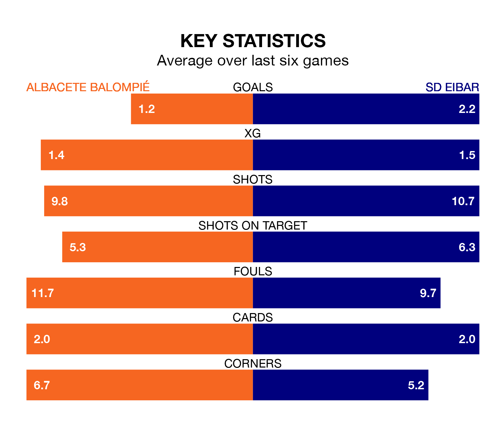

Albacete Balompié host SD Eibar in Sunday's late match at the Estadio Carlos Belmonte looking to bounce back from defeat last time out in the Segunda División.
Albacete, who sit 19th in the league after 36 games, fell to a 0-1 away defeat to CD Eldense on April 21.
They face an Eibar side who picked up a win in their last match, a 2-0 victory against AD Alcorcón, and who sit second in the table.
With 59 goals in 36 games so far this season, Eibar are the league's highest scorers with 1.6 goals per game. And they are conceding at an average rate, letting in 40 goals at a rate of 1.1 per game.
Albacete, meanwhile, are average scorers, with 1.1 goals per game. They have conceded 1.4 goals per game.
In Jon Bautista Orgilles, the away side have one of the league's most on-form strikers so far this season. He has notched 15 goals in 31 appearances, to sit third in the scoring charts.
The hosts' top scorers, with eight goals in 36 games each, are Alberto Quiles Piosa and Manuel Fuster Lázaro.
Albacete are in mixed form in the Segunda División, with two wins and two draws from their last six games.
With four wins and two losses over that period, Eibar's form is better – they have taken 12 points from 18, compared to Albacete's eight.
In the last three years, Albacete and Eibar have played each other on three occasions. Albacete won one of them and they drew the other.
Their last meeting was on November 12, when they played out a 1-1 draw.
Updated: 07:59 (UTC), 26/04/24